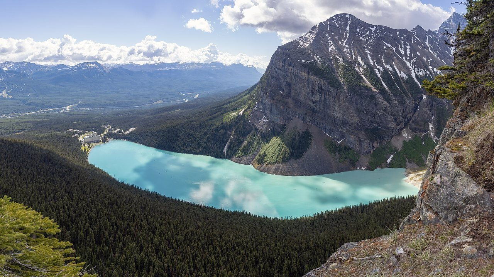

Race, Lake Louise

Behind
Best +0:01
371W
Target 418 W-47 W
- Cadence
- 87rpm
- Heart
- 140bpm
- Speed
- 26.5km/h
Work10 of 13
0:21
Next: · 1:00 at level 10
+1.2%
45 m climbed
5.86 km
21
Resistance / 32
Solo races your best-time ghost: position reads Ahead or Behind, and solo alone gets a Pause button. Frozen at 14:39.